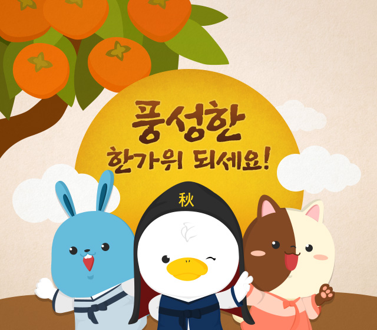
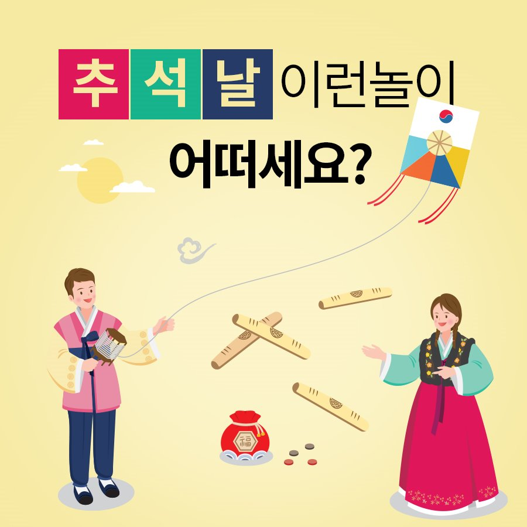

돌아오기
추석

목차
- 추석의 정의
- 추석에 대하여
- 추석의 의례
- 추석의 놀이방법
- 각 지역의 이색문화
추석의 정의
우리나라 명절의 하나. 음력 팔월 보름날이다. 신라의 가배(嘉俳)에서 유래하였다고 하며, 햅쌀로 송편을 빚고 햇과일 따위의 음식을 장만하여 차례를 지낸다.
추석의 어원
추석(秋夕)을 글자대로 풀이하면 가을 저녁, 나아가서는 가을의 달빛이 가장 좋은 밤이라는 뜻이니 달이 유난히 밝은 좋은 명절이라는 의미를 갖고 있다. 따라서 ‘추석’이란 대단히 상징적인 의미를 지닌 용어라 할 수 있다.
중국인들은 추석 무렵을 중추(中秋) 또는 월석(月夕)이라 하는데, 『예기(禮記)』에 나오는 조춘일(朝春日), 추석월(秋夕月)에서 유래했다고 한다. 추석날 밤에는 달빛이 가장 좋다고 하여 월석이라고 하는데, 우리나라에서는 신라 중엽 이후 한자가 성행하게 된 뒤 중국인이 사용하던 중추니 월석이니 하는 말을 합해서 축약하여 추석이라고 했다는 설이 있다.
중추절이라 하는 것은 가을을 초추(初秋), 중추(中秋), 종추(終秋)로 나누었을 때 추석이 음력 8월 중추에 해당하므로 붙은 이름이다.
추석에 대하여
동아시아 문화권의 전통 명절. 대한민국, 북한, 중화권, 일본, 베트남 등지에서 쉰다.
순 우리말로는 한가위다.
秋夕(추석)이란 한자어는 한국에서만 쓰는 단어로, 중국과 베트남에서는 이 명절을 중추절이라고 부른다.
추석의 의례
추석에 행하는 의례로 올베심리와 풋바심이 있다. 올베심리란 주로 호남 지역에서 나타나는 것으로 올벼 천신(薦新)을 말한다.
올기심리, 올계심리, 오리십리, 올비신미라고 부른다. 올벼란 ‘일찍 수확한 벼’를 일컫는 것으로, 벼가 다 여문 무렵 혹은 채 여물기 전에 여문 부분을 골라 찧은 쌀이다. 벼가 덜 여물면 미리 솥에 볶아서 말려두었다가 밥을 짓는다.
미리 베어온 벼포기는 안방 윗목 벽에 가로 묶어 두기도 한다. 호남지방에서는 농사를 짓지 않는 집에서도 벼포기를 사다 걸어둘 정도로 이 풍속은 일반화되어 있다.
벼뿐만 아니라 다른 곡식을 함께 걸어두기도 한다. 추석을 전후해서 잘 익은 벼, 수수, 조 같은 곡식의 이삭을 한 줌 베어다가 묶어 기둥이나 문설주에 걸어두는데 이것을 올게심니라고도 한다. 올게심니를 할 때에는 술과 음식을 차리고 이웃을 청해서 주연을 베풀기도 한다.
올게심니한 곡식은 다음해에 씨로 사용하거나 떡을 해서 사당에 천신하거나 터주를 비롯한 가신(家神)에게 올렸다가 먹는다. 올게심니는 이듬해 풍년이 들게 해달라는 기원의 뜻과 풍농을 예축하는 의미가 있다.
경북 안동을 비롯한 영남에서는 올베심리와 비슷한 것으로 풋바심이 전한다. 논 가운데 누렇게 잘 익은 부분을 지게로 한 짐 정도, 벼로는 두 말 정도, 쌀로는 한 말 정도 미리 베어서 탈곡한다. 이 쌀로 밥을 짓고 제물을 갖춰 제사를 지내는 것은 올베심리와 같다.

추석의 놀이방법
추석에는 강강술래, 줄다리기, 가마싸움, 소놀이, 거북놀이, 소싸움, 닭싸움 같은 놀이를 한다. 특히 추석과 같은 보름 명절에는 강강술래와 같은 원무(圓舞)가 중심을 이룬다. 한가윗날 보름달 아래서 노는 원무는 한층 운치가 있다. 추석놀이들은 단순한 놀이일 뿐만 아니라 풍농을 기원하고 예축하는 신앙적인 의미도 내포하고 있다.
강강술래
강강술래는 풍요를 상징하는 달에 비유되는 놀이이다. 농경사회에서 보름달은 풍요를 상징하며 이는 여성과도 관련된다.
여성은 생산의 주체이므로 여성 자체가 풍요를 상징하는 존재이며, 정월대보름의 만월(滿月)은 만삭의 여성으로 비유된다. 따라서 대보름날의 강강술래놀이는 여성들이 풍요의 달 아래에서 논다는 의미에서 풍요의 극치를 의미한다.
강강술래는 여러 가지 형태의 놀이로 이루어지지만 그 중에서도 원무는 보름달의 형상을 상징하여 한층 중요하다. 강강술래는 원무만 하는 것이 아니다.
고사리껑자(꺽자), 덕석몰이, 청어영짝(엮자), 문열어라, 기와밟기, 가마등, 닭살이, 남생이놀아라 같은 여러 놀이가 있다. 이것을 모두 하는 것은 아니고 몇 개씩 어울려서 한 놀이를 이룬다. 하지만 놀이의 성격을 두드러지게 드러내는 것은 역시 원무이다.
강강술래가 주로 전라도에서 즐기는 놀이인 반면, 경상도에서는 이와 같은 맥락의 놀이로 월월이청청, 놋다리밟기가 있다. 또 이 놀이들이 여성원무 중심의 놀이인 반면 남자들이 원무를 중심으로 노는 놀이로 쾌지나칭칭이 있다.
소놀이와 거북놀이
소놀이는 멍석을 쓰고 소 모양으로 가장하여 집집마다 찾아다니며 즐겁게 놀아주고 음식을 나누어 먹는 풍년 기원 놀이이다.
두 사람이 서로 궁둥이를 맞대고 엎드린 후 그 위에 멍석을 씌운다. 앞사람은 멍석 밑에서 잘 깎은 막대기 두 개를 내밀어 마치 뿔처럼 보이게 하고 뒷사람은 동아줄을 한 가닥 늘어뜨려 마치 쇠꼬리처럼 보이게 한다. 이때 농부 한 사람이 앞에서 소의 고삐를 잡고 끌고 간다. 소 뒤에는 풍물패가 따르며 흥을 돋운다. 소를 앞세운 일행은 부자집을 찾아간다. 대문 앞에서 쇠고삐를 잡은 사람이 “소가 배가 고파서 왔습니다. 여물과 뜨물을 주시오.”라고 소리치면 주인은 음식을 차려 대접한다. 이렇게 여러 집을 찾아다니며 마을 사람 모두가 즐겁게 보낸다. 거북놀이는 소 대신 거북으로 가장하여 노는 것이다.
소는 농부와 마찬가지로 농사일을 하는 존재로서 생구(生口)라 할 정도로 가족의 일원으로 여겼다. 거북은 십장생에도 등장하는 영물로서 수신(水神)과 농경신의 기능을 한다. 따라서 이 놀이들은 풍년을 기원하는 농경의례의 성격을 지닌다.
가마싸움과 원놀이
가마싸움은 1900년대 초까지 경북 의성 지역에서 전해오던 서당 학동들의 놀이다. 추석 때 훈장이 차례를 지내기 위하여 고향으로 돌아가 서당을 비우면 놀이가 시작된다. 모처럼 글공부에서 해방된 학동들이 모여서 나무로 가마를 만들며 놀이를 만끽하는 것이다.
옛날 의성에는 남부에 넷, 북부에 하나로 모두 다섯 곳의 서당이 있었다. 이 서당의 학생들이 남북으로 편을 가른 후 가마를 제작한다. 가마는 나무로 높이 1미터, 길이 1.7미터, 가로 1.2미터의 크기이며 바퀴 4개가 달려 있다. 가마 안에는 애호박을 따서 먹으로 사람 얼굴을 그려놓고 원님이라 불렀다. 각각 선두에 사령기를 비롯한 깃발들을 선두에 세우고 공격대와 수비대의 순서로 서서 싸움을 벌인다. 힘센 공격대원들이 먼저 적진에 뛰어들어 기를 뺏고, 가마를 발길로 차고 혼전을 벌여 가마와 가마끼리 부딪쳐 부서지는 쪽이 지는 것으로 한다. 이긴 편의 서당에서 과거 급제자가 많이 나온다고 여긴다.
씨름
추석날 남자들이 힘을 자랑하는 놀이로 빼놓을 수 없는 것이 씨름이다. 씨름은 5월 단오, 음력 7월 백중에도 하지만 추석놀이로도 많이 즐긴다. 한 마을에서 힘깨나 쓴다는 씨름꾼들이 체급과 나이에 상관없이 모여들면 이들을 마을의 대표 선수로 삼아 다른 마을 사람들과 겨루게 된다. 진짜 장사는 그 자리에서 더 이상 도전자가 없을 때까지 겨루어 뽑는데, 이기게 되면 ‘판막음했다’고 한다. 마을과 마을의 대항인지라 그 치열함이 상상을 뛰어넘는다. 힘겨루기는 추석 무렵 알찬 수확을 과시하는 놀이임에 틀림없다. 겨루기 싸움에서 이기는 편은 그해 혹은 이듬해의 풍년을 보장받기 때문에 씨름판의 열기는 더욱 뜨거워진다.
소싸움
사람뿐만 아니라 동물도 힘겨루기를 하는 날이 또한 추석이다. 봄부터 여름내 소먹이는 머슴들이 산등성이와 강변에서 소싸움을 붙여 그 마을에서 가장 힘센 소를 뽑는다. 이렇게 뽑힌 소에게는 극진한 대접을 하는데 심지어 보약까지 먹인다.상머슴이 고삐를 잡고 싸움판에 소를 끌고 들어가 싸움을 붙인 한쪽 소가 밀리거나 달아나면 지는 것으로 정한다. 만약 소가 다칠 염려가 있으면 중도에 싸움을 그치게 한다. 소싸움은 주로 마을과 마을의 경계 또는 넓은 강변에서 벌인다. 넓고 튼튼한 우리를 만들어서 황소 두 마리를 풀어두면 싸움이 시작된다. 앞발로 땅을 긁어 흙을 파헤치면 화가 났다는 표시인데 이 신호를 시작으로 서로 머리를 맞대고, 뿔로 밀고 받치며 열을 올린다. 힘이 모자란 놈은 한쪽 구석으로 몰려 “쿵” 하고 나가떨어지거나 슬금슬금 도망가게 되어 승부가 난다. 소끼리의 싸움이지만 주위의 열기도 만만치 않다.
소싸움은 여름내 어느 집 머슴이 소를 잘 먹이고 건강하게 하였는가를 가리는 싸움이기도 하다. 그래서 이긴 소는 목과 뿔을 비단과 종이꽃으로 장식하고, 그 위에 머슴이 타고 마을로 돌아온다. 그러면 주인집에서 거나하게 술을 한잔 대접한다. 근래에는 경북 청도의 소싸움이 유명하다.
조리희(照里戱)
줄다리기는 정월대보름에도 많이 하지만 지역에 따라 추석에 하기도 한다. 『동국세시기(東國歲時記)』에 다음과 같은 기록이 전한다. “제주도 풍속에 매년 8월 보름날 남녀가 함께 모여 노래하고 춤추며 좌우로 편을 갈라 큰 줄을 양쪽에서 잡아당겨 승부를 가린다. 줄이 만약 중간에서 끊어지면 양편이 모두 땅에 자빠진다. 구경꾼들이 크게 웃는다. 이를 조리지희(照里之戱)라 한다.” 이는 우리 줄다리기에 관한 가장 오래된 기록이다. 줄이 끊어지도록 만들어서 노는 데에 조상의 익살이 보인다.
각 지역의 이색문화
[1] 지역별 이색문화
| 지역 |
지역별 차례음식 |
지역별 추석송편 |
지역별 이색김치 |
지역별 이색 빵 |
| 제주도 |
카스테라,팥빵 |
완두콩송편 |
톳 김치 |
고래상어빵 |
| 강원도 |
감자전 |
감자송편 |
서거리, 오징어김치 |
아바이 오징어빵 |
| 경상도 |
돔베기 |
칡송편 |
콩잎김치, 통대구김치 |
영덕 대게빵 |
| 전라도 |
병어 |
꽃송편 |
우엉김치 |
전주 한옥빵 |
즐거운 추석 보내세요~